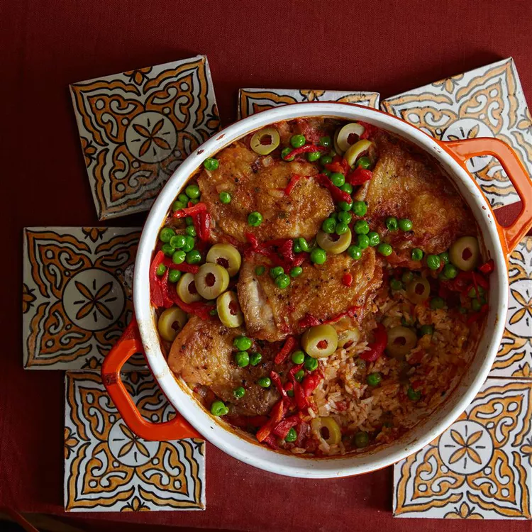

Arroz Con Pollo

Description
Wonderful homey chicken dish. This is a recipe from a relative in Panama. Fluff the rice carefully with a fork before serving, and enjoy!
Ingredients
- ¼ cup vegetable oil
- 1 (4 to 6 pound) whole chicken, cut into pieces
- 1 onion, chopped
Steps
- Preheat oven to 350 degrees F (175 degrees C).
- Heat vegetable oil in a Dutch oven over medium heat; cook and stir chicken pieces until browned, 5 to 10 minutes. Remove chicken with a slotted spoon and place on a plate. Cook and stir onion, green bell pepper, minced garlic, and whole garlic cloves in the same Dutch oven until onion is softened, about 5 minutes.